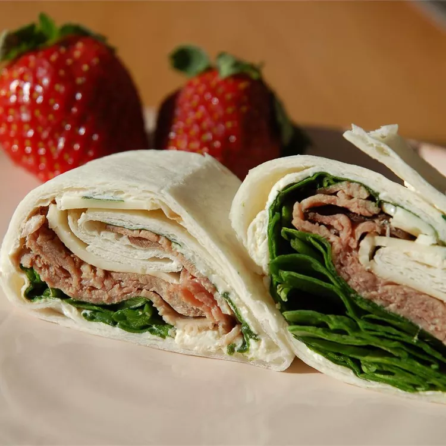

Roast Beef Horseradish Roll-Ups

Description
I make a batch of these roll-ups on Sunday and give them to the hubby and
kids in their lunches throughout the week. They are also great to put out
for parties!
Ingredients
- 2 (8 ounce) packages fat-free cream cheese, softened
- 3 ½ tablespoons prepared horseradish
- 3 tablespoons Dijon-style mustard
- 12 (12 inch) flour tortillas
- 30 spinach leaves, washed with stems removed
- 1 ½ pounds thinly sliced cooked deli roast beef
- 8 ounces shredded Cheddar cheese